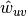
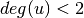
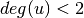

clustering¶
-
clustering(G, nodes=None, weight=None)[source]¶ Compute the clustering coefficient for nodes.
For unweighted graphs, the clustering of a node
 is the fraction of possible triangles through that node that exist,
is the fraction of possible triangles through that node that exist,
where
 is the number of triangles through node and
is the number of triangles through node and
 is the degree of .
is the degree of .For weighted graphs, the clustering is defined as the geometric average of the subgraph edge weights [1],

The edge weights  are normalized by the maximum weight in the network
 .
.The value of
 is assigned to 0 if .
is assigned to 0 if .Parameters: - nodes (container of nodes, optional (default=all nodes in G)) – Compute clustering for nodes in this container.
- weight (string or None, optional (default=None)) – The edge attribute that holds the numerical value used as a weight. If None, then each edge has weight 1.
Returns: out – Clustering coefficient at specified nodes
Return type: float, or dictionary
Examples
>>> G=nx.complete_graph(5) >>> print(nx.clustering(G,0)) 1.0 >>> print(nx.clustering(G)) {0: 1.0, 1: 1.0, 2: 1.0, 3: 1.0, 4: 1.0}
Notes
Self loops are ignored.
References
[1] Generalizations of the clustering coefficient to weighted complex networks by J. Saramäki, M. Kivelä, J.-P. Onnela, K. Kaski, and J. Kertész, Physical Review E, 75 027105 (2007). http://jponnela.com/web_documents/a9.pdf